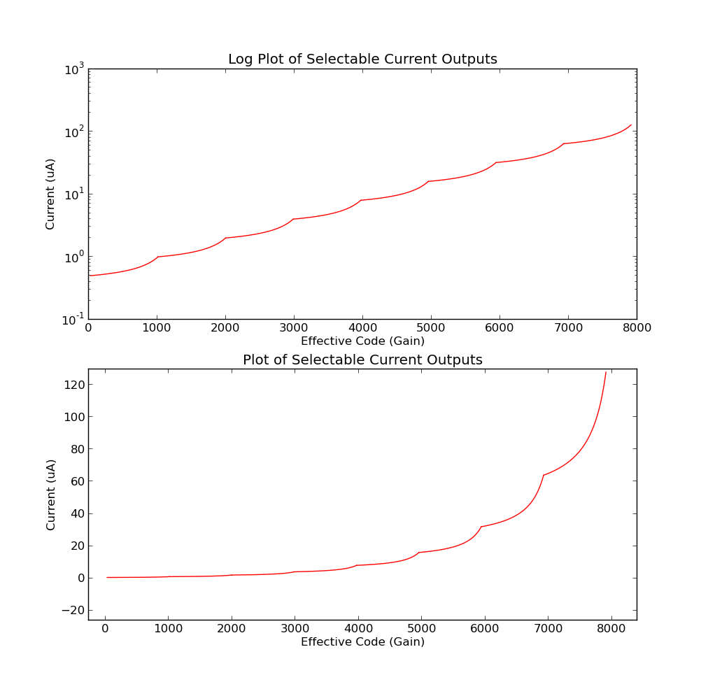

Programmable gain
AD 8221 combined AD5292 gives us a way to create a selectable gain current driver.
The basically topology uses programmable gain 1.4-2.8x with a hardware limited 3x gain limt (in case of digital pot failure), output into 8 selectable range switches.
All Values are at worst +-1%
On resistance of demux is at most 400 Ohm
1. .5uA - 1uA : Nominal:384K, 1%: 3.9K, 374kOhm + 20kOhm
2. 1uA - 2 uA : Nominal:192kOhm, 182kOhm + 20kOhm
3. 2uA - 4uA : Nominal: 96kOhm, 91kOhm + 10kOhm
4. 4uA - 8uA : Nominal: 48kOhm, 45kOhm + 5kOhm
5. 8uA- 16uA : Nominal: 24kOhm, 22kOhm + 5kOhm
6. 16uA - 32uA : Nominal: 12kOhm . 10kOhm+ 5kOhm trim
7. 32uA -64uA :Nominal: 6kOhm, 5kOhm + 2kOhm Ohm trim
8. 64uA - 100uA -128uA : Nominal: 3kOhm, 2kOhm 2kOhm trim
R_0 = the bias resistor value, this sets the zero scale maximum amplification, 24.7kohm
G_MAX = Maximum gain at 0 scale, set to 3
G_D-MAX = Maximum gain at design range limits = 2.8 , Digital code with 100K 1024 division potentiometer = 28 , 2.744 kOhm
G_D-Min = Minimum gain at design range limit = 1.4, Digital code with 100k 1024 division potentiometer = 1012 , 98.8kOhm
V_0 = nominal peak voltage going into the converter, .137V -> V_0*G_D-Min = .192V , .192V into 384kOhm = 0.5uA
R_V = Resistor for DDS output, this sets the p-p voltage V_0,
